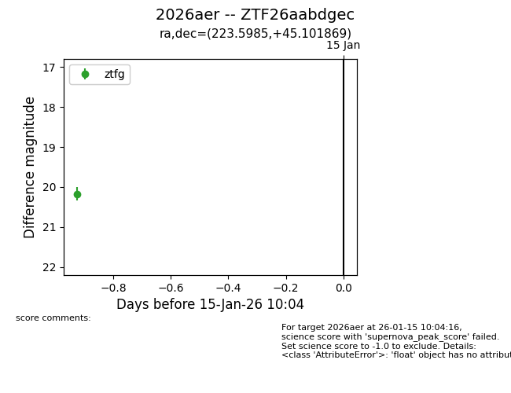
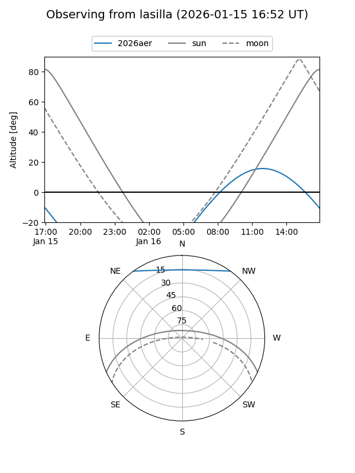
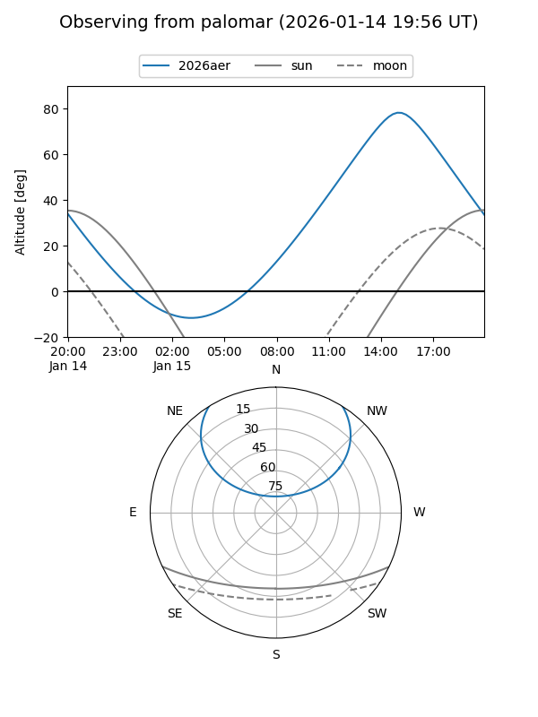

2026aer
Target 2026aer at 2026-01-16 13:50
Aliases and brokers:
FINK: link
Lasair: link
ALeRCE: link
TNS: link
YSE: link
alt names
ZTF26aabdgec (ztf,fink_ztf)
2026aer (tns,yse)
Coordinates:
equatorial (ra, dec) = 223.5985,+45.10187
equatorial (HMS+DMS) = 14:54:23.63,+45:06:06.73
galactic (l, b) = (77.3722,+59.64830)
Flags:
Photometry:
last ztfg=20.17
1 ztfg detections
Lightcurve

Visibility


Additional plots